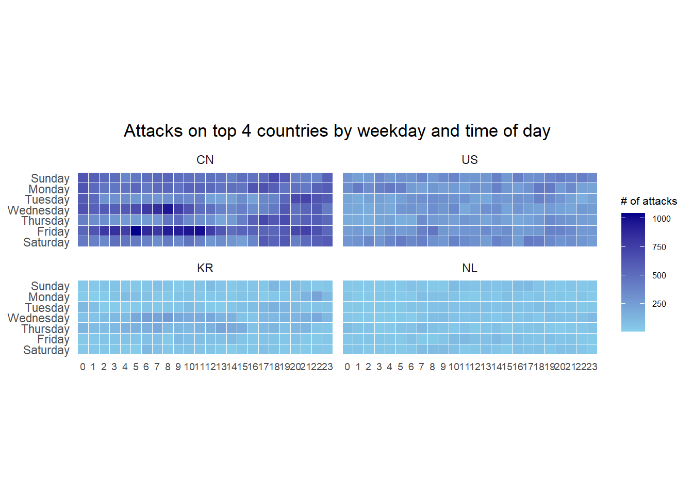
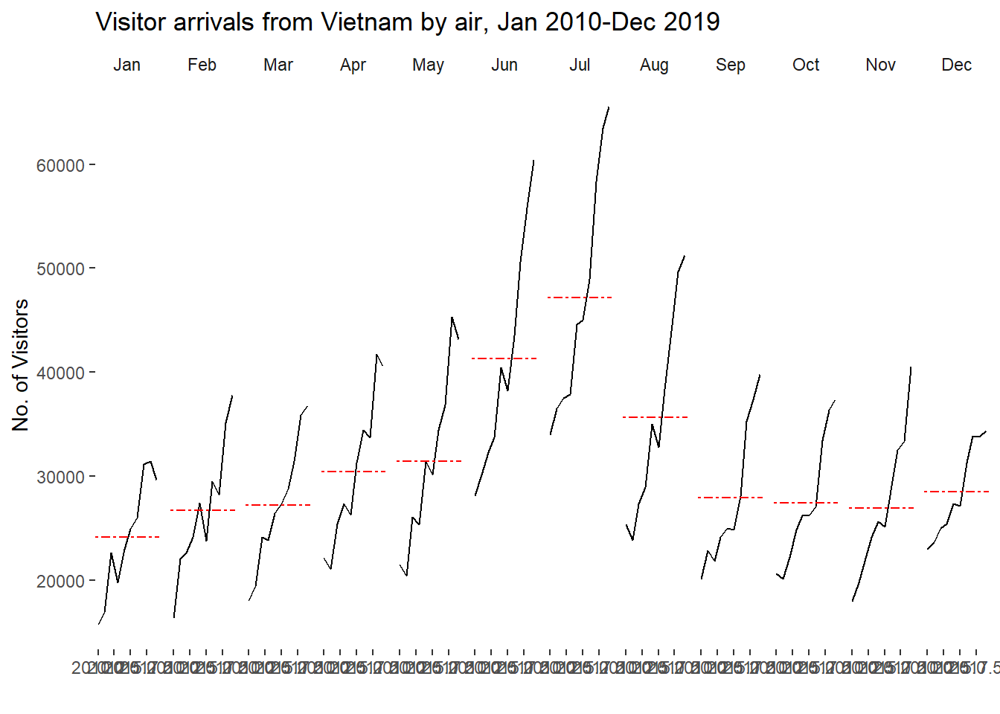
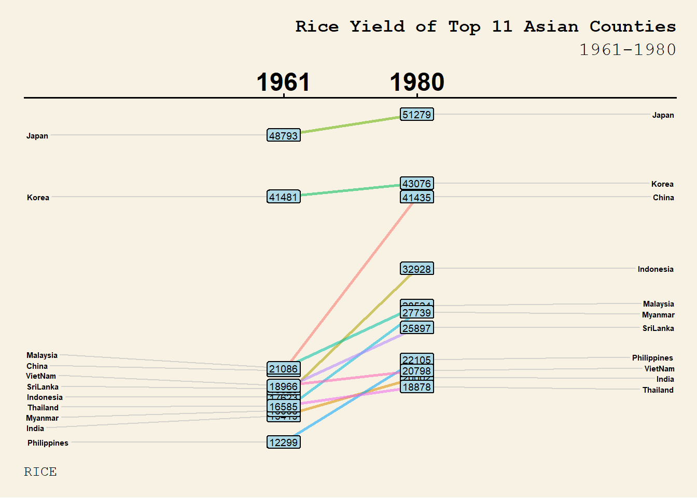
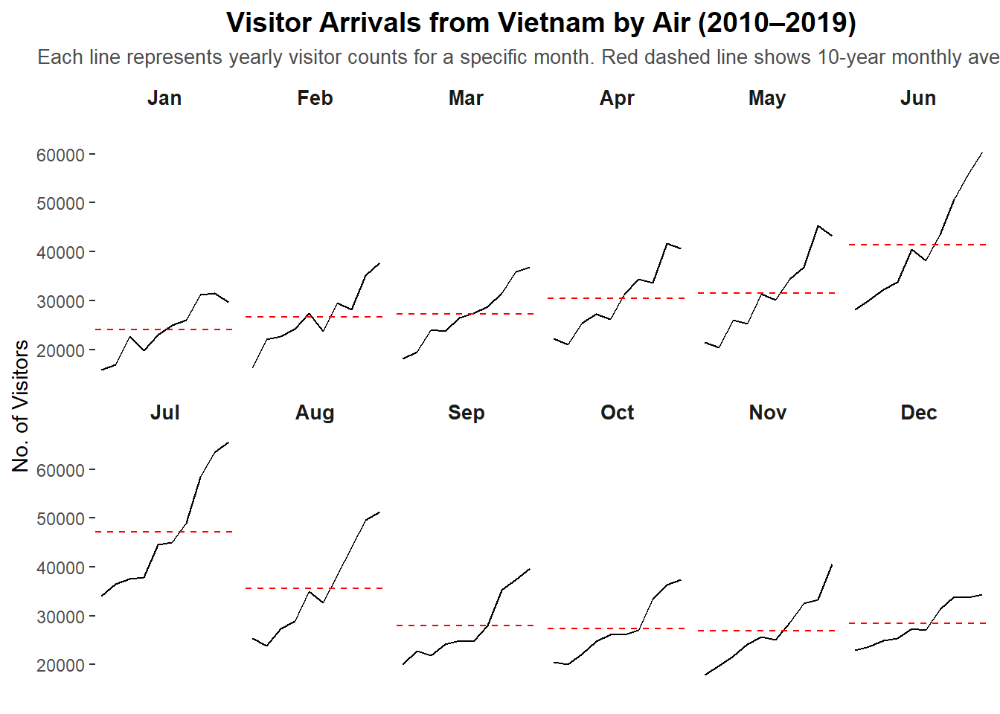
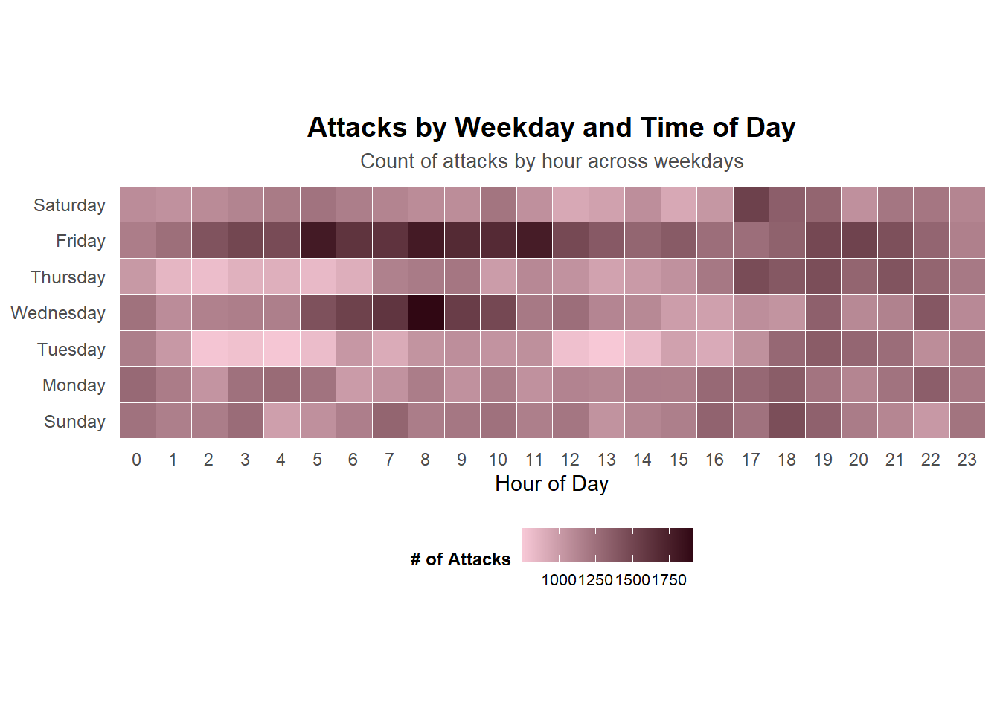
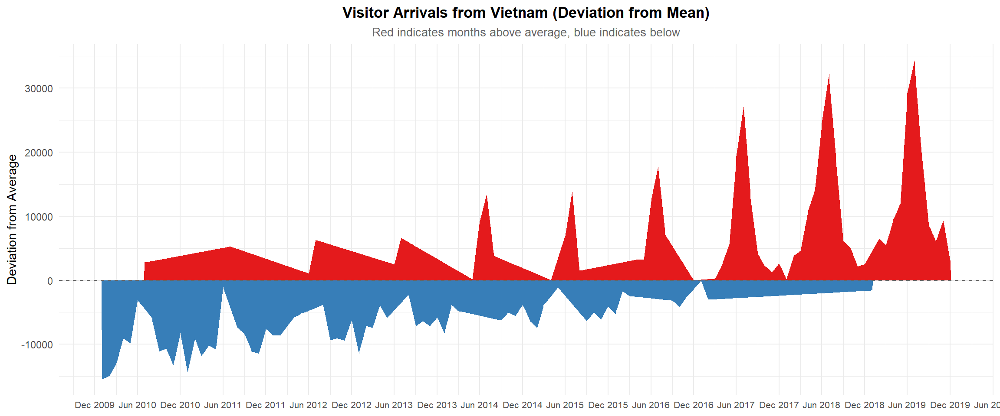

Code
pacman::p_load(scales, viridis, lubridate, ggthemes,
gridExtra, readxl, knitr, data.table,
CGPfunctions, ggHoriPlot, tidyverse)Note: Please toggle between ‘Show’ and ‘Hide’ above based on your preference for viewing the R codes.
By the end of this hands-on exercise you will be able create the followings data visualisation by using R packages:
plotting a calender heatmap by using ggplot2 functions,
plotting a cycle plot by using ggplot2 function,
plotting a slopegraph
plotting a horizon chart
Let’s install and launch the following R packages: scales, viridis, lubridate, ggthemes, gridExtra, readxl, knitr, data.table and tidyverse.
pacman::p_load(scales, viridis, lubridate, ggthemes,
gridExtra, readxl, knitr, data.table,
CGPfunctions, ggHoriPlot, tidyverse)In this section, you will learn how to plot a calendar heatmap programmatically by using ggplot2 package. By the end of this section, you will be able to:
plot a calendar heatmap by using ggplot2 functions and extensions.
to write functions using R programming.
to derive specific dates and time-related fields by using base R and lubridate packages.
to perform data preparation tasks by using tidyr and dplyr packages.
First, you will use the code chunk below to import eventlog.csv file into R environment and called the data frame as attacks. This data file consists of 199,999 rows of time-series cyber attack records by country.
attacks <- read_csv("data/eventlog.csv")It is always a good practice to examine the imported data frame before further analysis is performed. For example, kable() can be used to review the structure of the imported data frame.
kable(head(attacks))| timestamp | source_country | tz |
|---|---|---|
| 2015-03-12 15:59:16 | CN | Asia/Shanghai |
| 2015-03-12 16:00:48 | FR | Europe/Paris |
| 2015-03-12 16:02:26 | CN | Asia/Shanghai |
| 2015-03-12 16:02:38 | US | America/Chicago |
| 2015-03-12 16:03:22 | CN | Asia/Shanghai |
| 2015-03-12 16:03:45 | CN | Asia/Shanghai |
There are three columns, namely timestamp, source_country and tz.
timestamp field stores date-time values in POSIXct format.
source_country field stores the source of the attack. It is in ISO 3166-1 alpha-2 country code.
tz field stores time zone of the source IP address.
Step 1: Deriving weekday and hour of day fields
Before we can plot the calender heatmap, two new fields namely wkday and hour need to be derived. In this step, we will write a function to perform the task. ymd_hms() and hour() are from lubridate package, and weekdays() is a base R function.
make_hr_wkday <- function(ts, sc, tz)
{
real_times <- ymd_hms(ts,
tz = tz[1],
quiet = TRUE)
dt <- data.table(source_country = sc,
wkday = weekdays(real_times),
hour = hour(real_times))
return(dt)
}Step 2: Deriving the attacks tibble data frame
Beside extracting the necessary data into attacks data frame, mutate() of dplyr package is used to convert wkday and hour fields into factor so they’ll be ordered when plotting.
wkday_levels <- c('Saturday', 'Friday',
'Thursday', 'Wednesday',
'Tuesday', 'Monday',
'Sunday')
attacks <- attacks %>%
group_by(tz) %>%
do(make_hr_wkday(.$timestamp,
.$source_country,
.$tz)) %>%
ungroup() %>%
mutate(wkday = factor(
wkday, levels = wkday_levels),
hour = factor(
hour, levels = 0:23))The table below shows the tidy tibble table after processing.
kable(head(attacks))| tz | source_country | wkday | hour |
|---|---|---|---|
| Africa/Cairo | BG | Saturday | 20 |
| Africa/Cairo | TW | Sunday | 6 |
| Africa/Cairo | TW | Sunday | 8 |
| Africa/Cairo | CN | Sunday | 11 |
| Africa/Cairo | US | Sunday | 15 |
| Africa/Cairo | CA | Monday | 11 |
A tibble data table called grouped is derived by aggregating the attack by wkday and hour fields. A new field called n is derived by using group_by() and count() functions. na.omit() is used to exclude missing value. geom_tile() is used to plot tiles (grids) at each x and y position. color and size arguments are used to specify the border color and line size of the tiles. theme_tufte() of ggthemes package is used to remove unnecessary chart junk. To learn which visual components of default ggplot2 have been excluded, you are encouraged to comment out this line to examine the default plot.
coord_equal() is used to ensure the plot will have an aspect ratio of 1:1.
scale_fill_gradient() function is used to creates a two colour gradient (low-high).
grouped <- attacks %>%
count(wkday, hour) %>%
ungroup() %>%
na.omit()
ggplot(grouped,
aes(hour,
wkday,
fill = n)) +
geom_tile(color = "white",
size = 0.1) +
theme_tufte(base_family = "Helvetica") +
coord_equal() +
scale_fill_gradient(name = "# of attacks",
low = "sky blue",
high = "dark blue") +
labs(x = NULL,
y = NULL,
title = "Attacks by weekday and time of day") +
theme(axis.ticks = element_blank(),
plot.title = element_text(hjust = 0.5),
legend.title = element_text(size = 8),
legend.text = element_text(size = 6) )
Step 1: Deriving attack by country object
In order to identify the top 4 countries with the highest number of attacks, you are required to do the following:
count the number of attacks by country,
calculate the percent of attacks by country, and
save the results in a tibble data frame.
attacks_by_country <- count(
attacks, source_country) %>%
mutate(percent = percent(n/sum(n))) %>%
arrange(desc(n))Step 2: Preparing the tidy data frame
In this step, you are required to extract the attack records of the top 4 countries from attacks data frame and save the data in a new tibble data frame (i.e. top4_attacks).
top4 <- attacks_by_country$source_country[1:4]
top4_attacks <- attacks %>%
filter(source_country %in% top4) %>%
count(source_country, wkday, hour) %>%
ungroup() %>%
mutate(source_country = factor(
source_country, levels = top4)) %>%
na.omit()Step 3: Plotting the Multiple Calender Heatmap by using ggplot2 package.
ggplot(top4_attacks,
aes(hour,
wkday,
fill = n)) +
geom_tile(color = "white",
size = 0.1) +
theme_tufte(base_family = "Helvetica") +
coord_equal() +
scale_fill_gradient(name = "# of attacks",
low = "sky blue",
high = "dark blue") +
facet_wrap(~source_country, ncol = 2) +
labs(x = NULL, y = NULL,
title = "Attacks on top 4 countries by weekday and time of day") +
theme(axis.ticks = element_blank(),
axis.text.x = element_text(size = 7),
plot.title = element_text(hjust = 0.5),
legend.title = element_text(size = 8),
legend.text = element_text(size = 6) )
In this section, you will learn how to plot a cycle plot showing the time-series patterns and trend of visitor arrivals from Vietnam programmatically by using ggplot2 functions.
For the purpose of this hands-on exercise, arrivals_by_air.xlsx will be used. The code below imports arrivals_by_air.xlsx by using read_excel() of readxl package and save it as a tibble data frame called air.
air <- read_excel("data/arrivals_by_air.xlsx")Next, two new fields called month and year are derived from Month-Year field.
air$month <- factor(month(air$`Month-Year`),
levels=1:12,
labels=month.abb,
ordered=TRUE)
air$year <- year(ymd(air$`Month-Year`))Next, the code chunk below is use to extract data for the target country (i.e. Vietnam)
Vietnam <- air %>%
select(`Vietnam`,
month,
year) %>%
filter(year >= 2010)The code chunk below uses group_by() and summarise() of dplyr to compute year average arrivals by month.
hline.data <- Vietnam %>%
group_by(month) %>%
summarise(avgvalue = mean(`Vietnam`))The code chunk below is used to plot the cycle plot as shown in Slide 12/23.
ggplot() +
geom_line(data=Vietnam,
aes(x=year,
y=`Vietnam`,
group=month),
colour="black") +
geom_hline(aes(yintercept=avgvalue),
data=hline.data,
linetype=6,
colour="red",
size=0.5) +
facet_grid(~month) +
labs(axis.text.x = element_blank(),
title = "Visitor arrivals from Vietnam by air, Jan 2010-Dec 2019") +
xlab("") +
ylab("No. of Visitors") +
theme_tufte(base_family = "Helvetica")
In this section you will learn how to plot a slopegraph by using R.
Before getting start, make sure that CGPfunctions has been installed and loaded onto R environment. Then, refer to Using newggslopegraph to learn more about the function. Lastly, read more about newggslopegraph() and its arguments by referring to this link.
Import the rice data set into R environment by using the code chunk below.
rice <- read_csv("data/rice.csv")Next, code chunk below will be used to plot a basic slopegraph as shown below. For effective data visualisation design, factor() is used convert the value type of Year field from numeric to factor.
rice %>%
mutate(Year = factor(Year)) %>%
filter(Year %in% c(1961, 1980)) %>%
newggslopegraph(Year, Yield, Country,
Title = "Rice Yield of Top 11 Asian Counties",
SubTitle = "1961-1980")rice %>%
mutate(Year = factor(Year)) %>%
filter(Year %in% c(1961, 1980)) %>%
newggslopegraph(Year, Yield, Country,
Title = "Rice Yield of Top 11 Asian Counties",
SubTitle = "1961-1980",
XTextSize = 18, # Size of the times
YTextSize = 2, # Size of the groups
TitleTextSize = 14,
SubTitleTextSize = 12,
CaptionTextSize = 10,
Caption = "RICE",
TitleJustify = "right",
SubTitleJustify = "right",
CaptionJustify = "left",
DataTextSize = 2.5,
DataLabelPadding = 0.2,
DataLabelLineSize = 0.5,
DataLabelFillColor = "lightblue",
ThemeChoice = "wsj")
ggplot(Vietnam, aes(x = year, y = `Vietnam`, group = month)) +
geom_line(color = "black") +
geom_hline(data = hline.data, aes(yintercept = avgvalue),
linetype = "dashed", color = "red", size = 0.5) +
facet_wrap(~month, nrow = 2) +
labs(
title = "Visitor Arrivals from Vietnam by Air (2010–2019)",
subtitle = "Each line represents yearly visitor counts for a specific month. Red dashed line shows 10-year monthly average.",
y = "No. of Visitors",
x = NULL
) +
theme_tufte(base_family = "Helvetica") +
theme(
strip.text = element_text(size = 10, face = "bold"),
axis.text.x = element_blank(),
axis.ticks.x = element_blank(),
plot.title = element_text(face = "bold", size = 14, hjust = 0.5),
plot.subtitle = element_text(size = 10, hjust = 0.5, color = "gray30")
)
grouped <- attacks %>%
count(wkday, hour) %>%
ungroup() %>%
na.omit()
ggplot(grouped, aes(x = hour, y = fct_rev(wkday), fill = n)) +
geom_tile(color = "white", size = 0.2) +
scale_fill_gradient(
name = "# of Attacks",
low = "#f7c8d6",
high = "#300713"
) +
coord_equal() +
labs(
title = "Attacks by Weekday and Time of Day",
subtitle = "Count of attacks by hour across weekdays",
x = "Hour of Day",
y = NULL
) +
theme_minimal(base_family = "Helvetica") +
theme(
panel.grid = element_blank(),
axis.ticks = element_blank(),
axis.text.y = element_text(size = 9),
axis.text.x = element_text(size = 9),
plot.title = element_text(size = 14, face = "bold", hjust = 0.5),
plot.subtitle = element_text(size = 10, hjust = 0.5, color = "gray30"),
legend.title = element_text(size = 9, face = "bold"),
legend.text = element_text(size = 8),
legend.position = "bottom"
)
vietnam_ts <- Vietnam %>%
mutate(
date = ymd(paste(year, month, 1, sep = "-")),
visitors = Vietnam,
deviation = visitors - mean(visitors, na.rm = TRUE)
)
ggplot(vietnam_ts, aes(x = date)) +
geom_area(data = subset(vietnam_ts, deviation >= 0),
aes(y = deviation), fill = "#e41a1c") + # red for above avg
geom_area(data = subset(vietnam_ts, deviation < 0),
aes(y = deviation), fill = "#377eb8") + # blue for below avg
geom_hline(yintercept = 0, color = "gray40", linetype = "dashed") +
scale_x_date(date_breaks = "6 months", date_labels = "%b %Y") +
labs(
title = "Visitor Arrivals from Vietnam (Deviation from Mean)",
subtitle = "Red indicates months above average, blue indicates below",
y = "Deviation from Average",
x = NULL
) +
theme_minimal(base_family = "Helvetica") +
theme(
plot.title = element_text(face = "bold", hjust = 0.5),
plot.subtitle = element_text(hjust = 0.5, size = 10, color = "gray40"),
axis.text.x = element_text(size = 8)
)